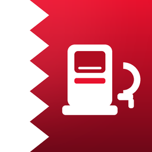

BanzeenPrivacy Policy
Last updated: 1 October 2026
Information we collect
None. Banzeen does not ask for your name, email address, phone number or location. The cars you add and the trips you calculate are saved only on your device, using Apple's on device storage. We cannot see them.
Fuel prices
To show the latest official prices, the app downloads a small public file from GitHub Pages, where the Banzeen price data is hosted. The request does not include any information about you or your cars. Like any website, GitHub may keep standard technical logs, such as IP addresses, for security. You can read the GitHub Privacy Statement.
Widgets and notifications
The home screen and lock screen widgets read a copy of the prices and your main car from the app on your own device. If you turn on price alerts, the alerts are created on your device. We do not run any server that knows whether alerts are on.
Third parties
Banzeen does not use advertising networks, analytics services or any third party tracking tools.
Children
Banzeen does not collect information from anyone, including children.
Deleting your data
You can delete any car from the My Cars tab. Deleting the app removes everything Banzeen saved on your device.
Changes
If this policy changes, the new version will be posted on this page with a new date.
Contact
Questions about privacy: khalidabdulla802@gmail.com